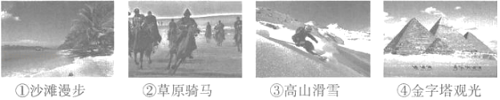
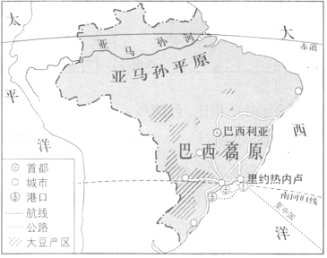
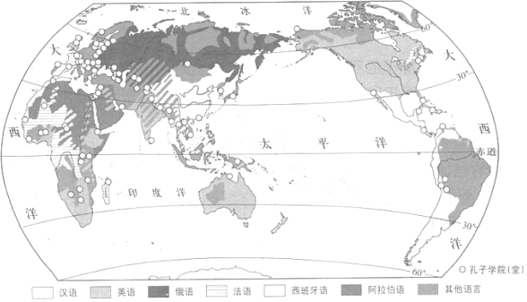

2019年北京市中考地理真题 · 选择题 第26、27、28、29、30题
小明为准备去东南亚旅游的爷爷奶奶定制行程。如图为预定过程中查找到的航班时刻表以及马来西亚首都吉隆坡的气候资料。读图，完成第24﹣27题。

26．出发前，小明嘱咐爷爷奶奶要（ ）
A．带张世界地图以防在城市中迷路
B．及时补充氧气，应对高原反应
C．留意安全通道，防范突发灾害
D．防寒保暖，当地夜晚气温较低
27．在东南亚旅游期间，爷爷奶奶可能参与的旅游活动是（ ）

A．①B．②C．③D．④
大豆是一种经济作物。目前，巴西是我国进口大豆的国家之一。如图为巴西大豆产区及主要运输线路分布图。读图，完成第28﹣30题。

28．巴西的大豆产区主要位于（ ）
A．沿海地区B．平原地区C．中纬度地区D．高原地区
29．巴西的大豆从产地运往中国，主要的交通运输方式为（ ）
A．内河运输﹣海上运输B．公路运输﹣海上运输
C．内河运输﹣航空运输D．公路运输﹣航空运输
30．同为“金砖国家”的成员国，我国和巴西的合作属于（ ）
A．南南合作B．东西合作C．南北对话D．东西对话
中国文化通过孔子学院在世界各地广泛传播，目前已有超过150个园家和地区建有500多所孔子学院和1000多个孔子学堂。如图为世界主要语言及部分孔子学院（堂）的分布图。读图，完成第31﹣33题。
